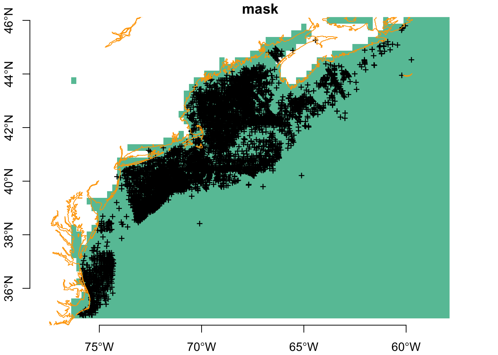
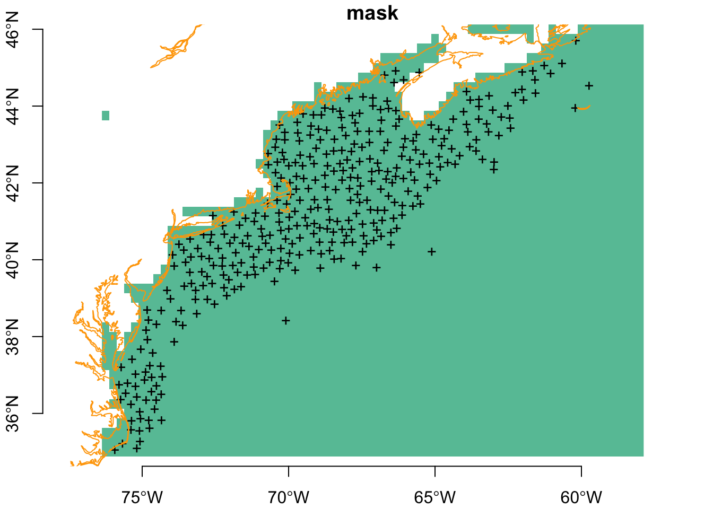
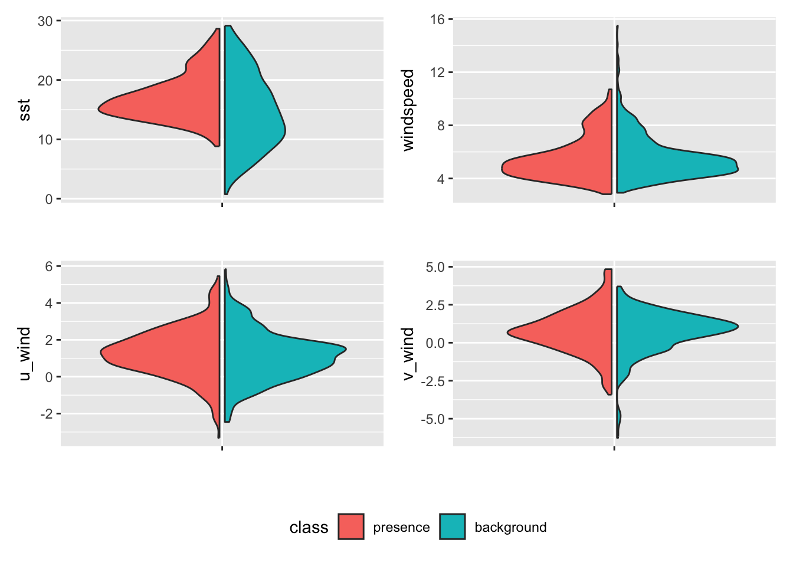
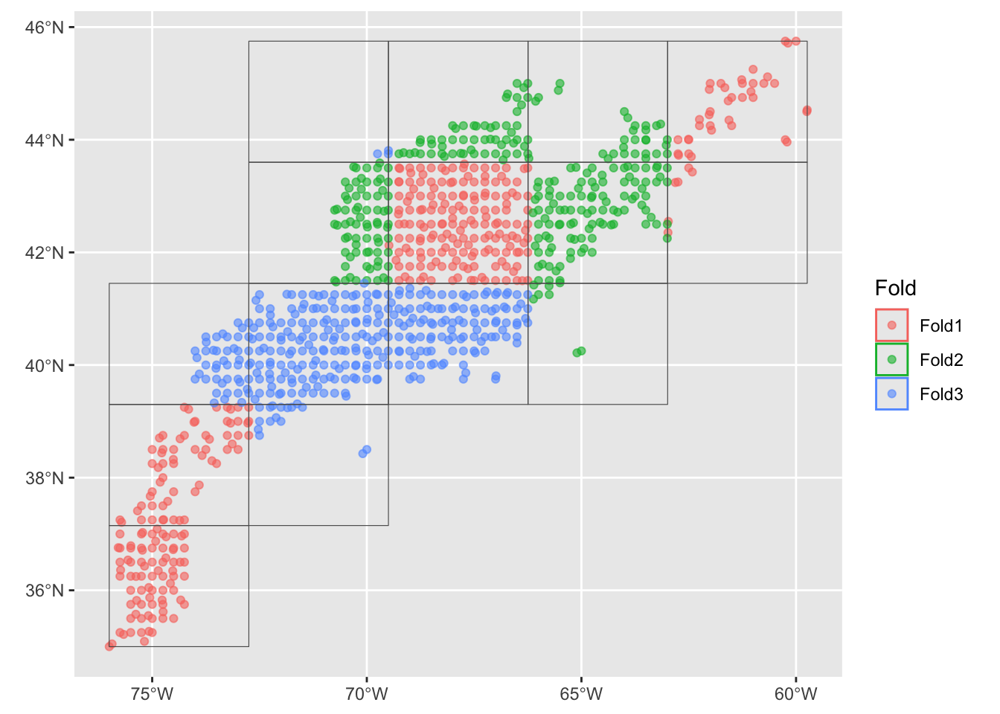

source("setup.R", echo = FALSE)
suppressPackageStartupMessages(library(tidysdm))
bb = get_bb(form = 'polygon')
coast = rnaturalearth::ne_coastline(scale = 'large', returnclass = 'sf') |>
sf::st_geometry()
obs = read_obis() |>
dplyr::filter(date >= as.Date("2000-01-01"))Exploring tidysdm
Here we try our hand with the tidysdm, which is a Species Distribution Modeling (“sdm”) wrapper around and extension of the tidymodels suite of R packages. We’ll walk through the steps shown in tidysdm’s overview vignette using our Mola mola dataset. We already have a good sense of our obseravtions and covariates so we can skip the data preparation steps.
Important
First we need to install a developmental version of tidysdm. The dev branch is subject to a pull request; it has been accepted into the upstream repos and it will work its way into a CRAN release.
remotes::install_github("EvolEcolGroup/tidysdm", ref = "dev")1 Thinning the observations
Here we thin the data. The idea of thinning is to have one presence point per cell of the target raster output. For this purpose we’ll need not just the observation data, but also a raster of the desired extent and resolution. We have two rasterized covariate datasets we can load in, and then use one or the other as our template.
First, the observations…
And now the covariates…
sst_path = "data/oisst"
sst_db = oisster::read_database(sst_path) |>
dplyr::arrange(date)
wind_path = "data/nbs"
wind_db = nbs::read_database(wind_path) |>
dplyr::arrange(date)
preds = read_predictors(sst_db = sst_db,
windspeed_db = wind_db |> dplyr::filter(param == "windspeed"),
u_wind_db = wind_db |> dplyr::filter(param == "u_wind"),
v_wind_db = wind_db |> dplyr::filter(param == "v_wind"))We’ll take the first slice of sst as a template and convert it into a mask.
mask = dplyr::slice(preds['sst'], "time", 1) |>
rlang::set_names("mask")|>
dplyr::mutate(mask = factor(c("mask", NA_character_)[as.numeric(is.na(mask) + 1)],
levels = "mask"))
plot(mask, breaks = "equal", axes = TRUE, reset = FALSE)
plot(sf::st_geometry(obs), pch = "+", add = TRUE)
plot(coast, col = "orange", add = TRUE)
Now we can thin using thin_by_cell(). You can see the number of observations is greatly winnowed.
set.seed(1234)
thinned_obs <- tidysdm::thin_by_cell(obs, raster = mask)
plot(mask, breaks = "equal", axes = TRUE, reset = FALSE)
plot(sf::st_geometry(thinned_obs), pch = "+", add = TRUE)
plot(coast, col = "orange", add = TRUE)
Next is to thin again by separation distance. Note that now thins even more more observation points.
thinned_obs <- tidysdm::thin_by_dist(thinned_obs, dist_min = km2m(20))
plot(mask, breaks = "equal", axes = TRUE, reset = FALSE)
plot(sf::st_geometry(thinned_obs), pch = "+", add = TRUE)
plot(coast, col = "orange", add = TRUE)
2 Sampling background
Here we depart a little from the original workflow to use the full compliment of observations to generate a sampling bias map. We diverge from the original workflow because we have no observations of “similar species” - Mola mola is unique.
First we develop a sampling density map to guide the backgroud selection if there is a sampling bias. We provide a function that takes a set of spatial points and a raster defining the desired geometry, and returns a raster with the number of points per cell.
observation_density_raster = rasterize_point_density(obs, mask)
pal = terra::map.pal("viridis", 50)
plot(observation_density_raster,
col = pal,
nbreaks = length(pal) + 1,
breaks = "equal",
reset = FALSE)
plot(coast, col = "orange", add = TRUE) 
Ahhh, as you might have surmised, there are some places where observations occur more frequently than in other places (observer bias? or species niche selection?) Now we select random background points using this weighted map to guide the background point selection.
Note
And we could dive into the endlessly fun discussion about what are we trying to do here? We know that selecting points at random is aimed at providing the model information that characterizes the backgound. After all, ultimately the model is used discriminate likely habitat relative to unlikely habitat. But… are we characterizing background just near the where observations occur? Or are we characterizing the background across the entire domain of the study? An endlessly fun topic for dinner parties!
For the purpose of this demonstration we’ll select only as many background points as we have obseravtion points.
set.seed(1234)
model_input <- tidysdm::sample_background(
data = thinned_obs,
raster = observation_density_raster,
n = 3 * nrow(thinned_obs),
method = "bias",
class_label = "background",
return_pres = TRUE) |>
dplyr::mutate(time = lubridate::NA_Date_, .after = 1)Warning in tidysdm::sample_background(data = thinned_obs, raster = observation_density_raster, : There are fewer available cells for raster 'NA' (363 presences) than the requested 1089 background points. Only 596 will be returned.ix <- model_input$class == "presence"
model_input$time[ix] <- oisster::current_month(thinned_obs$date)plot(model_input['class'], pch = 1, cex = 0.2,reset = FALSE, axes = TRUE)
plot(coast, col = "orange", add = TRUE)
Next we need to think about sampling through time. We’ll borrow from ?@sec-introduction to make a weighted time sample.
set.seed(1234)
nback = sum(!ix)
days_sample = sample_time(obs$date,
size = nback,
by = "month",
replace = TRUE,
weighted = TRUE)
# recall ix is the logical identifying the class "presence"
model_input$time[!ix] <- days_sample3 Extract points data from covariates
It’s easy to extract point data from raster.
input_data = stars::st_extract(preds, at = model_input, time_column = "time") |>
sf::st_as_sf() |>
dplyr::as_tibble() |>
dplyr::select(dplyr::all_of(names(preds)))
model_input = dplyr::bind_cols(model_input, input_data) |>
dplyr::glimpse()Rows: 959
Columns: 7
$ class <fct> presence, presence, presence, presence, presence, presence, …
$ time <date> 2012-06-01, 2016-08-01, 2017-11-01, 2003-07-01, 2018-11-01,…
$ geometry <POINT [°]> POINT (-66.60798 42.2943), POINT (-68.00023 42.60569),…
$ sst <dbl> 12.45633, 20.16968, 14.89867, 18.12452, 16.69533, 27.77900, …
$ windspeed <dbl> 4.911994, 4.860674, 8.411347, 4.308283, 8.377000, 7.495667, …
$ u_wind <dbl> -0.27018008, 1.58849359, 2.05362248, 1.27765775, 0.86364067,…
$ v_wind <dbl> -0.54305273, 0.75563574, -0.73934704, 2.79159832, -1.1114074…Now let’s look at the relationships among these predicitors. First a distribution plot.
model_input |>
dplyr::select(dplyr::all_of(c("class", names(preds)))) |>
tidysdm::plot_pres_vs_bg(class)
We can then compute a distance metric that measures the “distance” between presence and background records for a given covariate. The bigger the distance the more suitable the covariate is for modeling. Just what consitutes enough distance is harder to know.
model_input |>
dplyr::select(dplyr::all_of(c("class", names(preds)))) |>
tidysdm::dist_pres_vs_bg(class) sst v_wind u_wind windspeed
0.33613855 0.12776445 0.09061555 0.07322079 We can also look into correlations between the covariates. Except for windspeed and u_wind (the east-west component of wind) there isn’t any obvious correlation.
pairs(preds)
We can also deploy a filtering function that will identify the uncorrelated covariates (and the correlated ones, too!) Noe that none are recommened for removal, so we proceed with all four. If any had been flagged for removal we would do just that.
vars_uncor <- tidysdm::filter_collinear(preds, cutoff = 0.7, method = "cor_caret")
vars_uncor[1] "windspeed" "u_wind" "v_wind" "sst"
attr(,"to_remove")
character(0)4 Fit the model by cross-validation
model_input = dplyr::select(model_input, dplyr::all_of(c("class", names(preds))))
rec <- recipes::recipe(model_input, formula = class ~ .)
rec── Recipe ──────────────────────────────────────────────────────────────────────── Inputs Number of variables by roleoutcome: 1
predictor: 4
coords: 2model_input %>% check_sdm_presence(class)[1] TRUEmodels <-
# create the workflow_set
workflow_set(
preproc = list(default = rec),
models = list(
# the standard glm specs
glm = sdm_spec_glm(),
# rf specs with tuning
rf = sdm_spec_rf(),
# boosted tree model (gbm) specs with tuning
gbm = sdm_spec_boost_tree(),
# maxent specs with tuning
maxent = sdm_spec_maxent()
),
# make all combinations of preproc and models,
cross = TRUE
) %>%
# tweak controls to store information needed later to create the ensemble
option_add(control = control_ensemble_grid())set.seed(100)
input_cv <- spatial_block_cv(data = model_input, v = 3, n = 5)
autoplot(input_cv)
set.seed(1234567)
models <-
models %>%
workflow_map("tune_grid",
resamples = input_cv, grid = 3,
metrics = sdm_metric_set(), verbose = TRUE
)i No tuning parameters. `fit_resamples()` will be attemptedi 1 of 4 resampling: default_glm✔ 1 of 4 resampling: default_glm (302ms)i 2 of 4 tuning: default_rfi Creating pre-processing data to finalize unknown parameter: mtry✔ 2 of 4 tuning: default_rf (2.1s)i 3 of 4 tuning: default_gbmi Creating pre-processing data to finalize unknown parameter: mtry✔ 3 of 4 tuning: default_gbm (5.9s)i 4 of 4 tuning: default_maxent✔ 4 of 4 tuning: default_maxent (1.5s)autoplot(models)